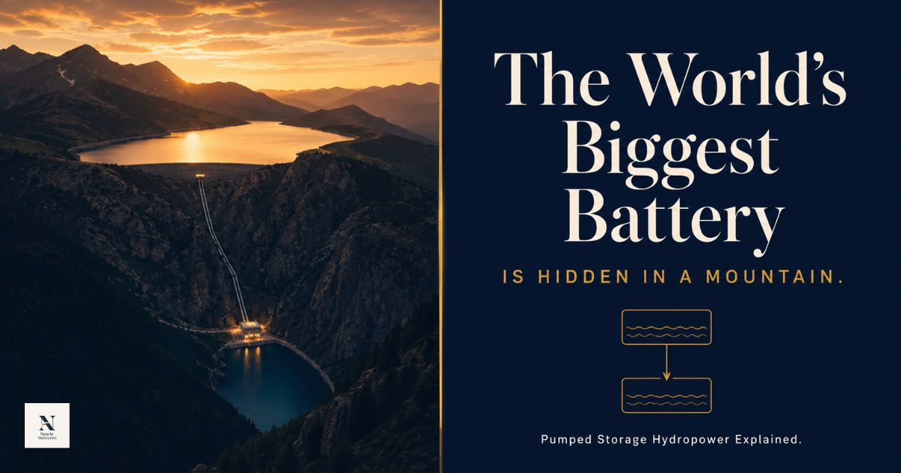
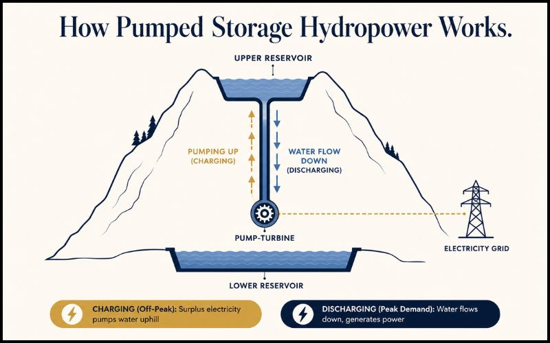

How Pumped Storage Hydropower became the backbone of the global clean energy revolution — and why the world is finally paying attention.

When people talk about the future of clean energy, the conversation almost always gravitates toward solar panels, wind turbines, or lithium-ion batteries. Rarely does anyone mention two reservoirs sitting on a mountain, connected by a tunnel. Yet that seemingly simple idea is quietly becoming one of the most important infrastructure bets of the 21st century.
Pumped Storage Hydropower (PSH) isn't new. It isn't flashy. But right now, governments, power companies, and investors around the world are pouring enormous resources into scaling it up — because they've realised something important: the renewable energy revolution doesn't just need clean power. It needs somewhere to store it.
Here's a challenge that doesn't make headlines but keeps energy planners up at night. Solar panels generate the most electricity around noon, when demand is moderate. Wind turbines spin best at night, when demand is low. But peak electricity demand hits in the evenings — when people come home, cook dinner, run air conditioners, and charge devices.
This mismatch between when clean energy is produced and when it's actually needed is one of the biggest unsolved problems in the global energy transition. The more solar and wind you add to the grid, the more pronounced this mismatch becomes. And unless you can store that surplus energy, a large portion of it simply goes to waste — or worse, the grid becomes unstable.
Battery storage (the kind using lithium-ion, like your phone) can help, but it's expensive and best suited for short bursts of a few hours. For storing large amounts of energy over longer periods — across days or even seasons — the world has essentially one commercially proven, cost-effective answer: Pumped Storage Hydropower.
The concept is elegant in its simplicity. A PSH plant has two water reservoirs — one at a high elevation, one at a low elevation — connected by tunnels and turbines. When there's surplus electricity on the grid, that energy is used to pump water from the lower reservoir up to the upper one. The water sits there, storing potential energy — like a giant wound-up spring.
When electricity demand spikes — in the evening, during a heatwave, or when other power sources go offline — the gates open. Water rushes downhill through the turbines, generating electricity instantly and feeding it to the grid. The upper reservoir empties, the lower one fills, and the cycle repeats.

The first known use of this technology dates back to Italy and Switzerland in the 1890s, and it arrived in the United States as early as 1930. What makes it so remarkable is that in its core mechanics, it hasn't changed much since. What has changed is the world's desperate need for it.
Think of it as a giant rechargeable water battery: Cheap electricity pumps water uphill (charging). Gravity brings it down through turbines to generate power (discharging). No exotic materials. No complex chemistry. Just physics.
Global PSH capacity now stands at 189GW, and annual additions have nearly doubled in the past two years — rising from a historical average of 2–4GW per year to 6GW per year and accelerating. The global development pipeline for pumped storage exceeds 600GW, more than three times the current installed base.
Researchers at the Australian National University have identified over 600,000 viable off-river sites globally — suggesting the geographical potential for scaling PSH is effectively limitless. The real constraints are capital, permitting timelines, and political will, not terrain.
China added 7.75GW of new PSH capacity in 2024 alone, and is on track to exceed its national target of 120GW by 2030. More than half of China's total new hydropower capacity added in 2024 was pumped storage — a clear signal of where Beijing sees the future of grid management.
Europe has a project pipeline of 52.9GW in development, with 3GW already under construction and 6.7GW having received regulatory approval. Austria's Limberg III plant, adding 480MW of new capacity, entered service in late 2025 — using existing reservoirs to avoid new surface impoundments entirely.
The US had over 50GW of data centre capacity operating by end of 2025, growing at 24% annually since 2020. This surge in constant, high-intensity electricity demand is pushing grid operators toward PSH as a reliability asset — not just a clean energy play.
PSH is not a generator in the traditional sense. It doesn't produce new energy from sunlight, wind, or water flow. Think of it as a precision regulator — a mechanism that makes every other renewable source dramatically more valuable and reliable.
A solar farm without storage is useful for roughly 6–8 hours a day. Pair it with a PSH plant, and that clean electricity can effectively power the grid around the clock. A wind farm that generates a surge of power at 3 a.m. can have that energy stored and deployed at 7 p.m. when it's actually needed. This multiplier effect on existing renewable investments is why energy planners increasingly see PSH as foundational infrastructure, not optional add-on.
"As the renewable energy market continues to grow, pumped storage hydropower is playing an increasingly vital role in ensuring system flexibility and stability."
— Eddie Rich, CEO, International Hydropower Association, 2025
Compared to lithium-ion batteries, PSH has a far longer asset life (50–100 years versus 10–15 years for batteries), lower lifetime cost, and no dependency on critical raw materials like cobalt or lithium — whose supply chains carry their own geopolitical and environmental risks. Where PSH lags is in response speed for very rapid millisecond-level grid fluctuations, and of course the geographical requirement for elevation differences. For grid-scale, long-duration storage — the hardest part of the energy transition to solve — PSH remains unmatched.
For India, pumped storage is not just an interesting energy option — it may be a national necessity. India's non-fossil installed capacity crossed 50% of total electricity capacity in 2025, five years ahead of schedule — a remarkable achievement. But it has also created a new challenge: the grid now needs to manage far more intermittent power than ever before.
Peak electricity demand hit a record 242.49GW in 2025. The government's response is ambitious. India's Central Electricity Authority has released a national roadmap targeting 100GW of pumped storage capacity by the 2035–36 financial year, positioning PSH as a central pillar of the country's long-duration energy storage strategy.
Torrent Power has contracted Larsen & Toubro to construct a 3GW pumped hydro plant in Maharashtra — India's largest PSH facility to date — capable of 6-hour daily discharge and 18GWh of energy storage capacity. Adani Green Energy has committed approximately ₹60,000 crore to Maharashtra PSH projects. India currently has 4.75GW commissioned, with projections to add 74.5GW more between 2025 and 2032.
India's terrain — the Western Ghats, northeastern highlands, Himalayan ranges — offers significant natural geography suited for PSH development. The government has also moved to simplify environmental clearances for closed-loop schemes (those not directly connected to rivers), reducing both permitting timelines and ecological concerns significantly. Of the 22 states and union territories with identified PSH sites, 15 had issued policies to promote development by end of 2025.
Pumped storage is powerful, but it isn't without complications. Honest assessment matters here.
You need two reservoirs at meaningfully different elevations, with access to water. Not every region has this. However, the identification of 600,000 off-river sites globally suggests the constraint is far less binding than once assumed.
A large PSH plant can take 8–15 years from planning to commissioning. Capital requirements are substantial. This is a significant hurdle in a world that needs storage solutions urgently — and is why policy support and financing structures are critical.
Building reservoirs affects local ecosystems, land use, and water flows. The shift toward closed-loop designs (using off-river sites rather than diverting rivers) significantly reduces these impacts. Retrofitting disused mines and existing reservoirs is an emerging and promising approach.
PSH plants are often sited in mountainous or remote areas. Transmitting electricity to urban centres requires significant grid infrastructure investment in parallel with the plant itself.
There's a reason energy analysts call PSH the "water battery" of the 21st century. The energy transition the world is pursuing isn't just about generating clean electricity — it's about delivering it reliably, at scale, to billions of people, at any hour of the day. Pumped storage hydropower is one of the few technologies that can underpin that promise at a civilisational scale.
Two reservoirs, a mountain, and gravity. The oldest physics in the book — doing some of the most important work in the modern world. And as the renewable energy buildout accelerates globally, the hidden battery in the mountain may well become one of the defining infrastructure stories of this generation.
Stay Curious: The next time you hear about a new solar or wind farm, ask what storage it pairs with. The answer to that question may be the most important part of the energy story.